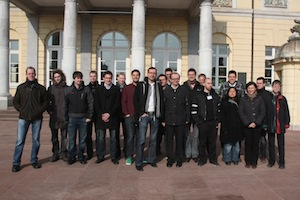

ZEUS Workshop 2011
Third Central European Workshop on Services and their Composition
February 21-22, 2011, Karlsruhe, Germany
Program
Monday, February 21, 2011
- 11:00 Daniel Eichhorn, Agnes Koschmider, and Huayu Zhang. Welcome
- 11:15 Dirk Fahland, Massimiliano De Leoni, Boudewijn F. Van Dongen, and Wil M.P. Van Der Aalst. Many‐to‐Many: Some Observations on Interactions in Artifact Choreographies
- 11:45 Andreas Schönberger. Do We Need a Refined Choreography Notion?
- 12:15 Matthias Geiger, Andreas Schönberger, and Guido Wirtz. A Proposal for Checking the Conformance of ebBP‐ST Choreographies and WS‐BPEL Orchestrations
- 12:45 Oliver Kopp, Frank Leymann, and Tobias Unger and Sebastian Wagner. Towards The Essential Flow Model
- 13:15 Lunch at Mensa
- 14:30 Jan Sürmeli. Towards deciding policy violation during service discovery
- 15:00 Dieter Schuller and Jan Sürmeli. Dienstgüte‐basierte Service‐Selektion für Zustandsbehaftete Services
- 15:30 Jarungjit Parnjai. Filtering Substitutable Services using Filtering Guidelines
- 16:00 Break
- 16:30 Oliver Kopp, Frank Leymann, David Schumm, and Tobias Unger. On Process Fragment Auto‐completion in BPEL
- 17:00 Richard Müller and Andreas Rogge‐Solti. BPMN for Healthcare Processes
- 17:30 Thomas Heinze, Wolfram Amme, and Simon Moser. Effiziente Abschätzung von Datenflussfehlern in strukturierten Geschäftsprozessen
- 18:00 Jörg Daubert, Erwin Aitenbichler, and Stephan Borgert. Service‐Komposition von Reiseprozessen mittels Graphtransformation
- 20:00 Dinner
Tuesday, February 22, 2011
- 08:45 Stefan Tai. The next step in Services Computing: Cloud Service Engineering (Keynote)
- 09:30 Matthias Kunze, Matthias Weidlich, and Mathias Weske. m3 – A Behavioral Similarity Metric for Business Processes
- 10:00 Martin Trapp (Senacor). Challenges of Real Life Service Landscapes (Keynote)
- 10:30 Break
- 11:00 Niels Lohmann. Internal behavior reduction for partner synthesis
- 11:30 Christoph Wagner. A Data‐Centric Approach to Deadlock Elimination in Business Processes
- 12:00 Jörg Lenhard, Andreas Schönberger, and Guido Wirtz. Streamlining Pattern Support Assessment for Service Composition Languages
- 12:30 Break
- 12:45 Rainer Schmidt. Meta‐Services als zusätzliche Beschreibungsdimension von Cloud‐ Services
- 13:15 Peter Lachenmaier and Florian Ott. Building a Person‐Centric Mashup System. CommunityMashup: A Service Oriented Approach
- 13:45 Daniel Schleicher and Frank Leymann. CAPE: Compliance Aware Process-design Environment
